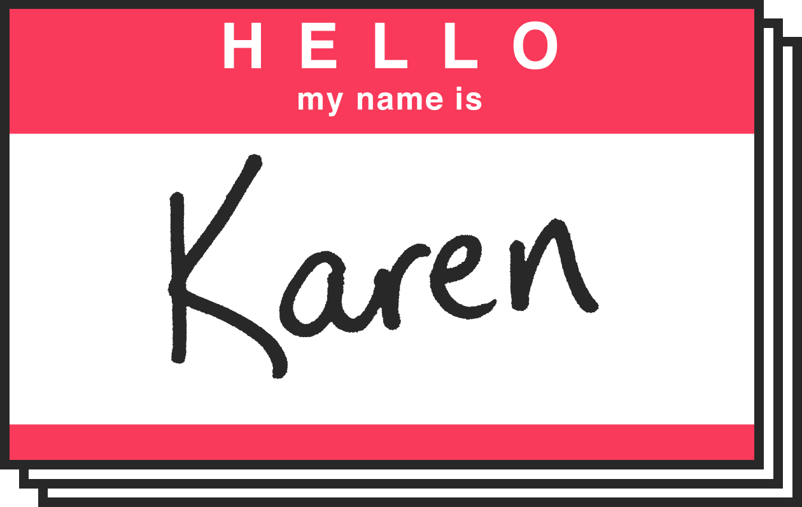

Female “Karens” Recently there’s been debate about whether “Karen” is a racist or sexist slur akin to using the n-word. It’s not. Need more convincing? Take it from someone named Karen herself. Need even more? Sounds like you need to check out the resources in our authors’ note. But, if you’re simply just tired of seeing the name Karen everywhere, we’ve got you covered. Here are the names to use instead for women of the same age, generation, and White privilege. (Our apologies to all the Deborahs, Debbies, and Debras.)

You Know Karen
But do you know the names that could be “other Karens” or “future Karens?” We found them using data.
“Karen” is having a moment — and that’s not a good thing. You’ve seen her at Red Lobster, taking in a ball game, stuck in traffic with Kidz Bop, doing her own remix of Megan Thee Stallion’s “Savage”, and with her dog off leash endangering a Black man’s life in Central Park.
But how did the name Karen become cultural flashpoint “Karen” — an entitled middle-aged White woman who needs to speak to the manager?
First culturally: In her book, Race After Technology, scholar Ruha Benjamin explains that a name is not just a name: “Naming a child is serious business. And if you are not White in the United States, there is much more to it than personal preference.” Names can have real-world effects including influencing the chance you’ll get a callback for a job and making it impossible to submit an online college application. The “Karen” meme is exposing White women, some for the first time, to stereotyping based on their name.
Second popularity: According to baby name data from the Social Security Administration (which doesn’t include race/ethnicity and only categorizes by binary male/female gender), the name Karen first appeared in the female Top 20 in 1941 and spent 30 years there until it dropped out in 1971. By the 1990s, the name had fallen out of the Top 100.
Chances are you don’t know too many babies named Karen today, but when the name hit its peak at #3 in 1965, Karens were everywhere. (Important context: the US was 88.6% White at the time). It’s this swift rise and fall in popularity that’s made Karen the name so era defining and made “Karen” the meme a perfect caricature of women of a certain age and a certain privilege.
Charting the name’s popularity got us thinking: are there other names that are equally as “Karen” as Karen?
To put this question to the test, we checked baby names from the last 100 years and eliminated those that: 1) never made it into the Top 20 most popular names in any year and 2) were not present in the top list for at least 50 out of 100 years. That left us with 129 female names and 76 male names (yes, we’re going there too!). We tested each of these names, looking for the ones that most closely matched Karen’s rise and fall in popularity.
To find the closest match, we calculated the correlation between any name’s popularity over time compared to Karen’s. A correlation of 1 is a perfect match; a correlation of -1 is a name that rose and fell in popularity in the exact opposite way that Karen did (an “anti-Karen”, if you will); and the closer to 0 the correlation gets, the less that name’s popularity is like either “Karen” or “anti-Karen”. Since we’re looking for names most like Karen, we’ll focus on those that are a strong match, or anything with a correlation above 0.7. So, without further ado, introducing...
The Other
Karens
Male “Karens” The name Karen is largely reserved for women (especially White women) between 45–65, but is there a male equivalent? Maybe it’s Ian, like Urban Dictionary suggests. Or maybe it’s Rand of Middle Class Fancy fame. Or maybe it’s Donald, the “Karen in Chief.” Or perhaps it’s simply Greg. Nope, according to our data, it’s definitely one of the names below.
Now you know which names have the potential to become an alternative viral punchline, but what about the next generation of “Karens.” Is it really Becky?
We’ve calculated which more recently popular names have a similar trajectory as the name Karen. These names could become “future Karens” in 10, 20, and 30 years. While these names may be “meme-able” in the coming years, people with these names don’t have to become a “Karen” themselves. But, it requires those of us with privilege to put in the work to address institutional and systemic racism, classism, and sexism. For more info, including good places to get started, please see our authors’ note.
Am I a future Karen?
Search for a name
If you don't see your name in the search, your name did not appear in our data. Names with red numbers below have strong correlations (above 0.7) to the name Karen.
Your Name
Top Female Names
Top Male Names
The Future
Karens
Female “Karens” Turns out, that “BBQ Becky” and “Becky with the good hair” aren’t the names most closely correlated with Karen. Here are the names that you’ll need to watch out for in .
Use the dropdown to look into the future.
Male “Karens” Of course we’re future proofing you for male names too. The names below are in the danger zone in .
Use the dropdown to look into the future.
Authors' note
All three authors of this piece identify as White women, two of whom have names that have the potential to become “future Karens,” and one who has a name that was almost certainly a past “Karen.” We are committed to listening, learning, and being active allies in the fight for equity, inclusion, and racial and social justice. We believe that #BlackLivesMatter. If you, like us, benefit from a system of White privilege, please educate yourself and become a positive “Karen”. Here are some starting points:
Articles
- For Our White Friends Desiring to Be Allies, Sojourners
- Save the Tears: White Woman's Guide & White Guyde To The Galaxy, Tatiana Mac
- When Feminism Is White Supremacy in Heels, Rachel E. Cargle
- The Grief That White Americans Can’t Share, Nikole Hannah-Jones
- Privileged, Kyle Korver
Books
- How to Be an Antiracist, Ibram X. Kendi
- White Fragility: Why It's So Hard for White People to Talk about Racism, Robin DiAngelo
Film & Audio
- Code Switch podcast, NPR
- Come Through with Rebecca Carroll, WNYC
- 13TH and When They See Us, Directed by Ava DuVernay
- Living at the Intersection, Brittany Packnett Cunningham
- Where Do We Go From Here?, A conversation led by Oprah
Social Threads
- 10 Steps To Non-Optical Allyship, Mireille Cassandra Harper
- Here are ways non-black people can socially transition into a long-term movement, Lily Someson
Projects & Guides
- The 1619 Project, The New York Times Magazine
- Dear White Women, Rachel E. Cargle
- Anti-Racism Resource List, maintained by Tiffany Bowden
Methodology
Baby name data for the last 100 years (1918–2018) was collected from the Social Security Administration (SSA). Race and ethnicity is not included in the original data. Baby names are classified by sex in the SSA data, but the authors would like to acknowledge that both sex and gender do not exist in a male-female binary. See more background on the baby names dataset’s limitations here.
First, for each sex we normalized each year’s name counts by the sex-specific number of babies born in total for each year. This makes sure that any underlying trends in either number of babies or number of babies of a particular sex do not get confused with a trend in name popularity.
Then we needed to see which names had a similar trajectory of popularity over time as the name Karen. There are a variety of ways to calculate a correlation between two groups. We use the Kendall rank correlation coefficient to find the other “Karens.” It measures the similarity of two sets of data based on each data point’s rank when ordered per group.
For example, take the name Karen’s popularity values, K1 and K2, for two years and another name’s popularity values, P1 and P2, for the same two years. If the rank of the values K1 and P1 are both bigger than the rank of K2 and P2 then this is evidence that the ordering of the datasets are similar, increasing the value of the correlation.
This correlation type results in high correlations between two names that have a similar shape of popularity trajectory over time rather than just focusing on their absolute popularity. That is why you see high correlations between the names Karen and Kathy despite Kathy being a less popular name than Karen, overall.
To find future “Karens,” we use the same correlation calculation, but we introduce a lag between the popularity trajectories. A handful of popularity values were dropped from the correlation computation when this lag caused us to go too far forward in time. If we shift the “Karen” trajectory forward in time and compare it to the other names’ untouched trajectories, we can see which name has a similar popularity curve that is just pushed further into the future.
The data repo can be found here.